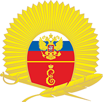
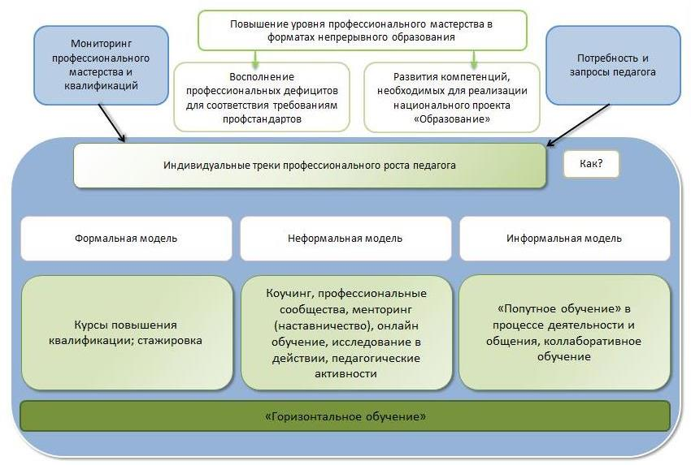
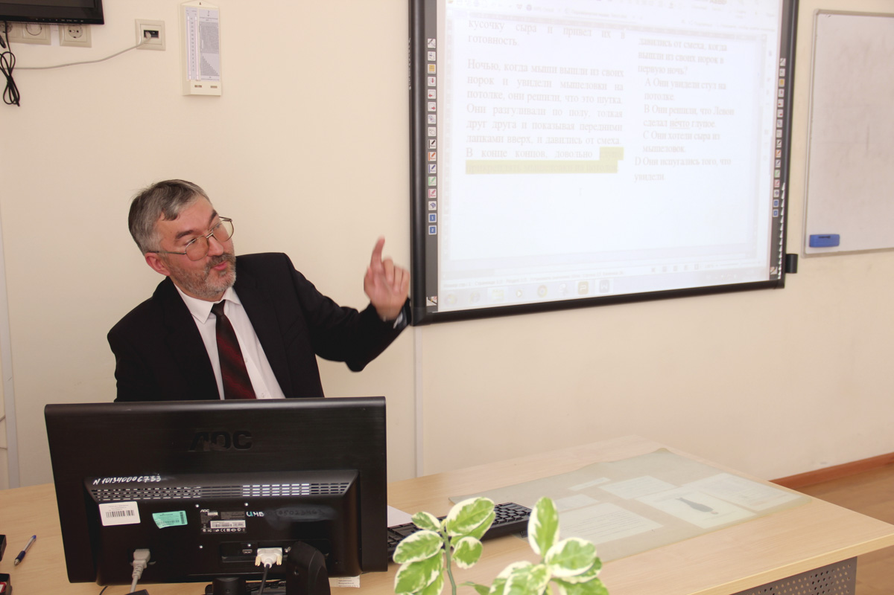
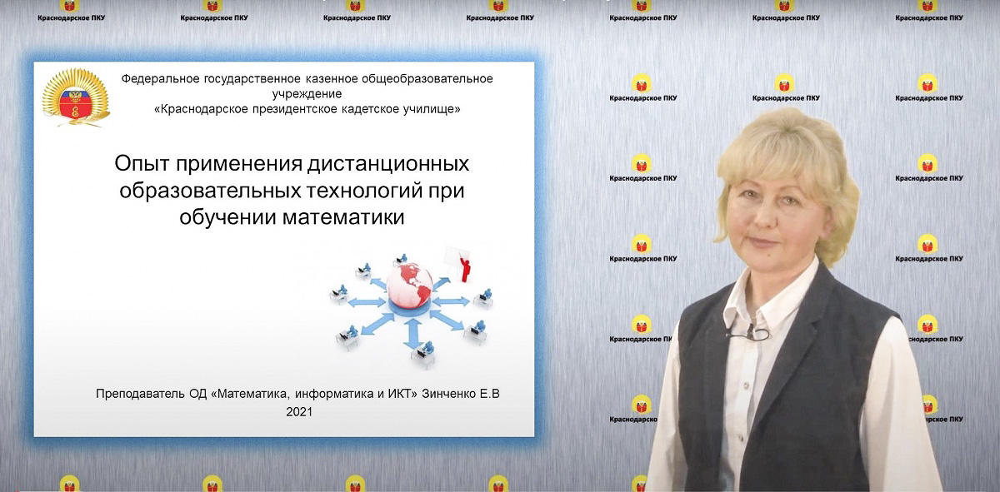
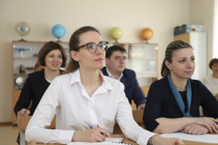
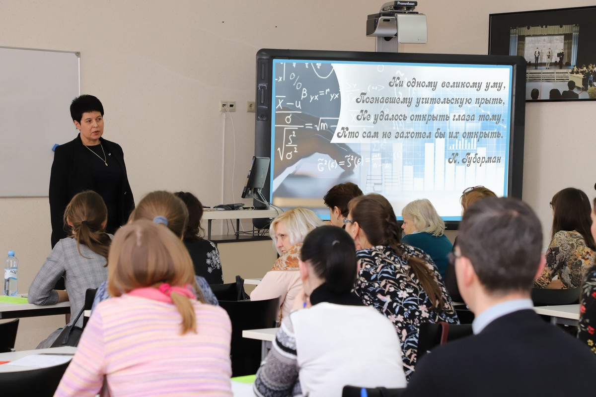
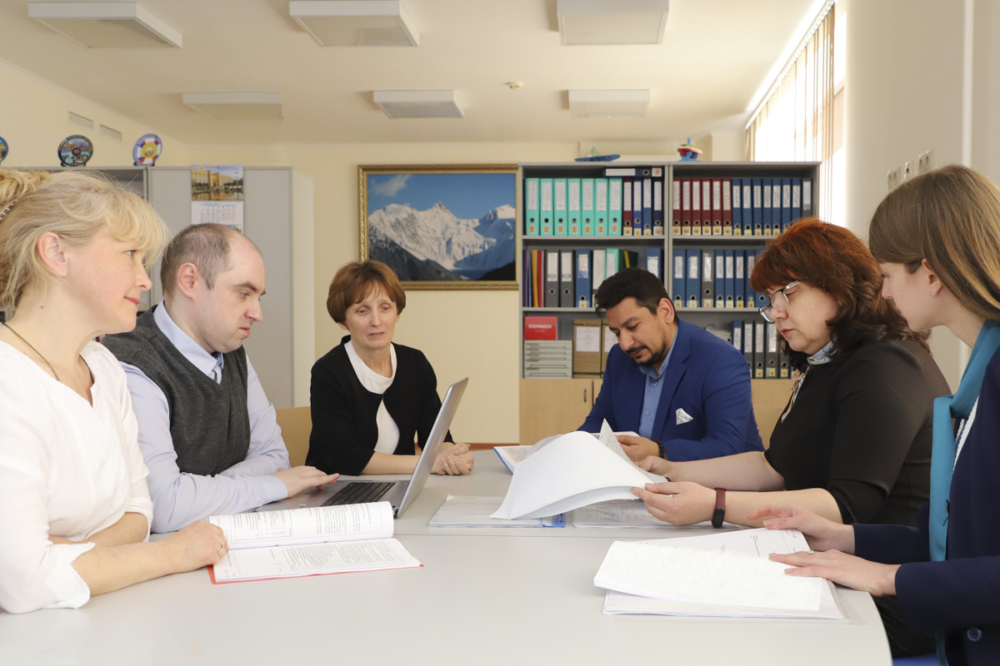
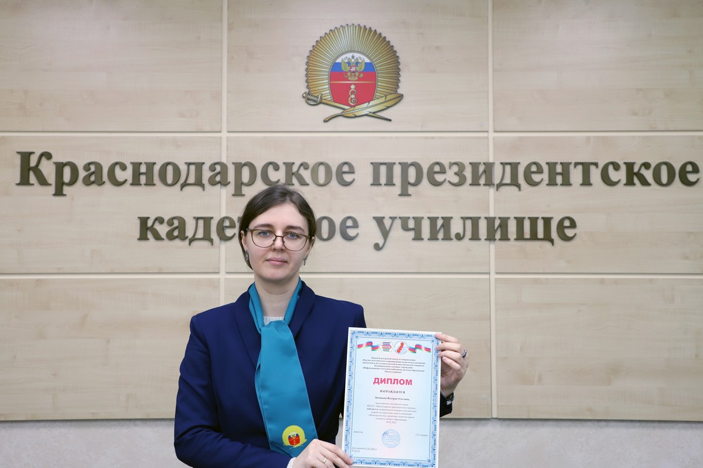
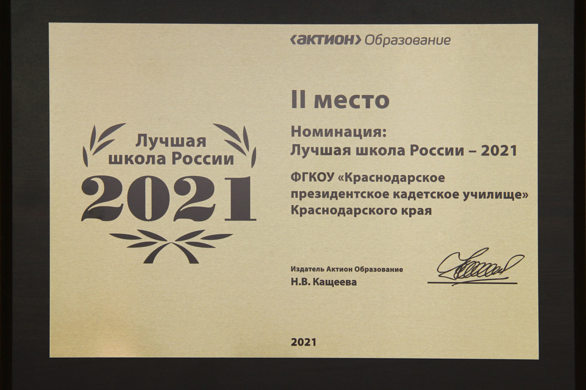
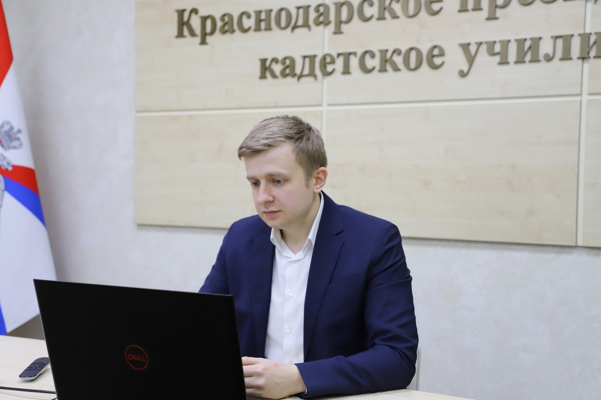

Федеральное государственное
казенное общеобразовательное учреждение
«Краснодарское президентское кадетское училище»
Методическая площадка «неСТАНДАРТный» урок

Пять функций методического проекта
- диагностика профессиональных компетенций
- информация об уровне развития (минимальный, базовый, высокий) профессиональных компетенций, выявленных профессиональных дефицитах и возможностях их преодоления
- проектирование и реализация уровней программы теоретической и практической подготовки педагогов
- профессиональная коммуникация на основе индивидуального консультирования по запросу педагога и/или его участие в работе профессиональных педагогических сообществ
- рефлексия педагогом уровня профессионального роста
РАЗРАБОТЧИКИ ПРОЕКТА
- КОПЫТЬКО Т.Г., заместитель начальника училища
(по учебной работе) - ЧУРИКОВА С.А., заведующий методическим кабинетом
- ПРОКОФЬЕВА В.А., старший методист учебного отдела
ЦЕЛЬ ПРОЕКТА
- Отработка практических навыков использования продуктивных технологий, методик и ценных находок в образовательном процессе Краснодарского ПКУ для достижения стабильно положительных результатов образовательного процесса и принципиально нового качества образования.
ЗАДАЧИ ПРОЕКТА
- Удовлетворение образовательных потребностей педагогических работников в расширении диапазона их знаний и навыков; оказание содействия непрерывному профессиональному развитию педагогов училища в условиях динамично меняющегося мира.
- Содействие внедрению инновационных процессов в преподавании и обучении, обеспечение максимальной эффективности используемых подходов и методов, направленных на достижение стабильно положительных результатов образовательного процесса и принципиально нового качества образования.
ПАРТНЕРЫ ПРОЕКТА
- МБУ ИМЦ Екатеринбургский Дом учителя
- ГБОУ ИРО Краснодарского края
УЧАСТНИКИ ПРОЕКТА
- 100+ очных участников
- Преподавательский состав училища
- ∞+ заочных участников
- Учителя, заместители директоров школ, методисты ОО Краснодарского края
ОЖИДАЕМЫЕ РЕЗУЛЬТАТЫ
- Трансляция эффективного педагогического опыта и ознакомления с ним; тиражирование лучших педагогических практик преподавателей училища.
- Создание развивающей профессиональной педагогической среды.
- Удовлетворение информационных, учебно-методических и образовательных потребностей педагогов.
- Создание актуальной методической базы (информационно-методической, нормативно-правовой, научно-теоретической информации) для преподавателей училища, психолого-педагогических задач (кейсов) с вариантами решения и обеспечен доступ к программам и информационно-методическим материалам лучших практик (база ЦОР) для обеспечения развития профессионального мастерства и роста уровня компетенций педагогов.
- Осуществление методического сопровождения преподавательского состава училища.
КРИТЕРИИ МОНИТОРИНГА ЭФФЕКТИВНОСТИ РЕАЛИЗАЦИИ ПРОЕКТА
- динамика показателей обученности обучающихся училища
- динамика качества обучения по результатам ГИА (ОГЭ, ЕГЭ)
- Удовлетворение информационных, учебно-методических и образовательных потребностей педагогов.
- динамика личных достижений всех субъектов образовательного процесса
- создание продуктов распространения передового педагогического опыта
- динамика квалификационного уровня педагогов
- степень удовлетворенности всех участников образовательного процесса уровнем и качеством предоставляемых училищем образовательных услуг
- уровень комфортности образовательной среды для всех участников образовательного процесса
Получи новые знания
- диагностика профессиональных компетенций (через создание аналитического онлайн-сервиса для самооценки методических дефицитов и построения индивидуальных маршрутов повышения квалификации на основе оценки профессиональных компетенций)
- информация об уровне развития (минимальный, базовый, высокий) профессиональных компетенций, выявленных профессиональных дефицитах и возможностях их преодоления
- обучение у ведущих экспертов, исследователях и практиках продуктивным технологиям, методикам и ценным находкам в образовании
- проведение и участие в дискуссионных площадках; форсат-сессиях; участие в едином методическом дне «Такие разные уроки, но в каждом – мастера рука»; решение практических психолого-педагогических кейсов и др
- реализация «горизонтального обучения» в рамках училища
Выйди на новый уровень
- подготовка и проведение мастер-классов; открытых уроков
- разработка практических психолого-педагогических кейсов
- представление опыта работы на открытых педагогических площадках различного уровня
- методический десант
- развитие рефлексивного мышления педагогов



Включись в сообщество. Найди вдохновение
- участие в профессиональных конкурсах
- участие в Педагогических марафонах
- участие в экспериментальной деятельности
- реализация процесса коучинга для определения целей и нахождение наиболее действенного пути их достижения



Окажись на высоте!!!
- профессиональный рост
- повышение качества знаний обучающихся
- рост их успешности в интеллектуальных и творческих конкурсах



СРОКИ РЕАЛИЗАЦИИ ПРОЕКТА
- январь 2020-декабрь 2022
ФОРМЫ ВЗАИМОДЕЙСТВИЯ
- дискуссионные площадки
- выступления и мастер классы
- форсайт-сессии
- геймификация
- единый методический день «Такие разные уроки, но в каждом – мастера рука»
- дайджест полезных документов
- фестиваль педагогических идей
- методический десант
- проективные сессии
Продукт деятельности
- Региональная стажировочная площадка ГБОУ ИРО Краснодарского края
- Банк эффективных практик (база ЦОР)
Педагог получит возможность
- Актуализировать знания и компетенции в области применения передовых образовательных технологий, получить представление о наиболее успешных и перспективных образовательных трендах как в мировой, так и в отечественной педагогической практике.
- Выявить степень владения профессиональными компетенциями и оценить возможности их развития.
- Разнообразить спектр цифровых навыков для применения их в повседневной профессиональной деятельности.
- Получить направление для дальнейшего профессионального развития по уникальной образовательной траектории.